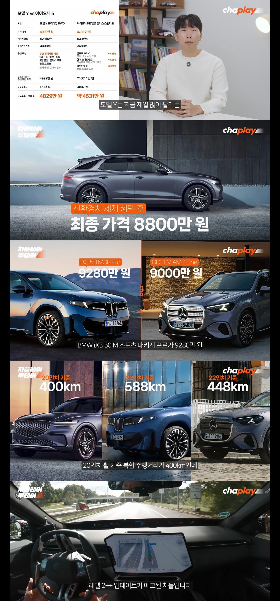

아이오닉 5 살래 300더 주고 모델 Y살래?
gv70살래 200 더주고 벤츠살래?
더군다나 테슬라 bmw 벤츠 저 셋 모두 지금팔고 있는 차들도 관련법만 정비되면 업데이트 차선변경까지 되는 반자율주행 가능한데 비해
현대가 지금 파는차는 멈춘차는 못보고 들이박는 수준에서 나아질 수가 없어서
길게 내다보면 더욱 사기 그렇지..

아이오닉 5 살래 300더 주고 모델 Y살래?
gv70살래 200 더주고 벤츠살래?
더군다나 테슬라 bmw 벤츠 저 셋 모두 지금팔고 있는 차들도 관련법만 정비되면 업데이트 차선변경까지 되는 반자율주행 가능한데 비해
현대가 지금 파는차는 멈춘차는 못보고 들이박는 수준에서 나아질 수가 없어서
길게 내다보면 더욱 사기 그렇지..
덧글 달려서 댓글 수정이 안되네
'장마철 침수 실내 물바다' <- 이건 차가 침수된게 아니라, 신차 불량으로 장마철에 실내로 물이 새서 실내가 물바다 된 것임. 조립불량인지, 불량부품을 조립한건지는 모르겠음
신차 출고하고 1년만에 실내 물바다 감동 실화
근데 예약 안했다고 1급종합블루핸즈 2곳 입구컷, 직영사업소(하이테크) 입구컷
예약은 1급종합도 2주 후, 직영사업소(하이테크)는 45일 이내에 다 꽉차서 예약 불가능ㅋㅋ
아니 물이 새서 바닥이 찰랑찰랑하는데 어떻게 그걸 기다리냐 해도 방법이 없댜 ㅋㅋ
주재원 통해서 간신히 입고시킴. 수리하고 젖은 바닥 다 드러냈는데 작업 개판으로 해서 재작업 여러번 했다. 그래도 플라스틱 다 씹창남ㅋㅋ
타는 사람마다 왜 신차인데 플라스틱들 다 갈려있냐고 쥐가 파먹었냐고 물어봄ㅋㅋ
현기차 돈은 일년에 10조씩 버는데 AS망에도 왜 이렇게 투자를 안 하는지 모르겠음..
블루핸즈 가맹점은 솔직히 자기들 AS망이라고 보기도 애매하다고 생각함.
(궁금한 사람들 로드뷰로 대전하이테크센터 건물모양 보고와라 ㄹㅇ 4공화국 건물. 난 직영사업소 고객 대기실 음료냉장고에 자물쇠 채워놓은 브랜드 처음봤음ㅋㅋ)
내가 올해 한여름에 그 에어컨 하나를 못고치고 직영사업소는 전화예약은 지랄 뭐 되는게 없어서
타다 타다 못참고 긴급출동 불러서 도봉사업소 그냥 갖다 쳐박았다 ㅋㅋㅋㅋㅋㅋㅋㅋㅋ
AS? 좆빠는소리, 지랄노임
이새끼들 AS괜찮다는건 ㄹㅇ 보증 끝나고 대충 아무데나 쳐박아도 될 때 얘기지
보증 내에서 사업소 챙겨가야할때는 수입보다 더 개병신임
포드 탈때가 AS경험 압도적으로 더 좋았음
아 그래서 골프샀다
삼성, 하닉은 롱숏있는데 현대차는없나..
공매도 치셈 ㅋㅋ
하드웨어는 좋은데 소프트웨어가 참..
가격도 비싸,
주행보조 성능도 후져.
추후 업데이트도 안돼서 FSD급 주행보조 또는 자율주행 기대도 할 수 없어.
살 이유가 없지.
가격 싼거 원하는 사람들은 그냥 중국 BYD 사는거고. 가격 좀 주더래도 좋은 차 타고 싶은면 테슬라 사는거고.
내연기관 차도 아반떼 가격 보면 그냥 현기차 살 마음이 싹 사라짐
태슬라가 멈춘차는 피해도 주식은 꼬라박더라ㅎㅎ
주가 따지면 테슬라 1년새 고점기준 25% 정도 빠질때 현대차는 1/3이 되버렸는데...
현대는 테슬라보다 3배 빠졌어…
생각보다 경계선들 많아서 괜찮대
가성비 수동차 고트임
자동차는 일반적으로 최소 10년은 보고 사는건데 현대는 소프트웨어 기능도 쓰려면 신차 사게끔 만들어 놨으니 안사지...
5w, ccnc 유기
플레오스 병신이라 유기 확정이지
현대 빼고 요즘 잘팔리는 차들은 관련법 개정만되면 업데이트 딸깍으로 기능 풀어줄 수 있는 차들이고 아니면 니애비 처럼 진짜 싸게 팔던가
2016년 17년에 나온 차와 2026년에 나온 차 HDA 성능 차이가 거의 없음
나도 흉기 빠고 흉기 가솔린몰지만ㅋㅋㅋ 저 가격 전기차면 bmw나 벤츠 테슬라사지
렌트비가 20만원 차이남. 싸니까 타는거지.
자율주행 되면 그때 바꾸면 되는거고.
지금 흉기차 절대 사면 안됨
중고만 사야함
자율주행 비스무리한것만 되어도 기존 수동차 개취급 할거임
그렇다고 르쌍쉐살순없잖아?(르쉐 오우나)
아5 중고 가성비 좋을듯
근데 현대가 테슬라에 비해 딸리는게 뭐야?
FSD안 타봐서 그럼 지금 테슬라 타는데
거의 거의 2009년도 아이폰 나올때랑 애니콜이랑 비교됨. 수동차 탈 이유가 없음
그거 말고도 비교대상이 많겠지?
댓글들 보면 엄청나던데
글쓴아.... 정지물체 못피한다는 가능성은 시스템상 어떤 차도 가능한 이야기다.
테슬라도 fsd 테스트한다고 미국의 유명한 차량유투버가 미국도로 횡단 나섰다가
도로막은 나무토막인지 먼지 인식못하고 얼마 가지도 못하 바로 하부 대파손 견인엔딩 당한게 불과 반년전이다
브랜드가치를 섣불리 높이 들어가고 소프트웨어 삽질이 이어진거지 니가 쓴 사족은 억까다
도로에 있는 바닥에 붙어 있는 애매한 물체를 인식 못하고 박는거하고 그냥 정차한 차를 냅다 들이받는거하고 같음? 그리고 사고 빈도는? 심지어 메뉴얼에서도 정지된 물체를 인식못한다고 명시되어 있는걸 쉴드친다고?
"자율주행"이 아니라고
그러니까 감독형으로 크루즈컨트롤을 사용하더라도 전방주시, 스티어링 잡고 상시 개입할 준비하라는 메뉴얼이 있는데 이걸 쉴드치고 말고 할게 어딨냐
이게 흉기만 그렇냐? 모든 자동차 제조사가 다 그래
제조사에서 보증하는 "자율주행"이 아니라 "주행보조장치, 주행편의장치"니까.
니 말대로 크루즈컨트롤이 정지된 차를 인식하고 멈춘다 치자
품질분야에서 6시그마조차 99.99966% 의 양품율로 100%가 아닌것처럼 자동차에 적용되는 기술도 아무리 잘 만들어도 0.00001%의 오류나 에러는 있기 마련아니겠냐
혹시 모를 그 오류로 고속도로 멀쩡히 잘 달리고 있던 차가 있지도 않은 정지된 차를 오류로 인식해서 급제동을 걸어버리면?
오류로 인한 사고의 빈도보다 사고의 파장은 이게 더 클걸?
전세계 자동차 제조사들은 정말 어마어마하게 보수적으로 설계하고 개발함.
모든 부품과 기술에 표준이 있고, 합의가 있고 최소한의 규제가 있어. "인명"이 걸린 기계장치를 만드는 일이기때문에 이런 위험성을 회피하기 위해서라도 엄청나게 보수적으로 접근할 수 밖에 없는분야야.
일본의 자동차 부품 제조사였던 타카타 에어백이 에어백 전개시 금속파편이 튀어나오는 결함때문에 파산한것처럼 인명이 관련된 문제는 정말 기술혁신을 조심스럽게 할 수밖에 없는거야.
자동차보다 더 한게 항공산업이지.
지금 멀쩡히 잘 날아다니고 있는 보잉 737은 베이스가 707에서 파생됐고, 이 보잉 707이 무려 1957년도에 처음 나온 모델이니까.
아이러니하게도 자동차를 자체제작하는 나라중 기술혁신을 이루는 곳이 중국과 미국이야
왜?
중국은 말그대로 기술선점하기 위해 기술개발 및 실증과정에서 발생하는 인명사고는 나라에서 입막음으로 통제하면 되고
미국은 말그대로 미국 우선주의, 미국식 자본주의로 기술개발이 가능하니까.
쉐보레 임팔라가 초기에 후방 방향지시등이 브레이크등과 같이 사용하며 점멸해서 우리나라에서 얼마나 논란이 있었냐
이 방향지시등 색상하나만으로도 그렇게 논란인데, 우리나라에서 기술혁신이랍시고 테슬람들이 그렇게들 빨아대는 테슬라처럼 만들면 개 난리날껄?
검증도 안된 기술을 돈을 받고 쳐 팔았다느니(심지어 몇년전에 무려 900만원이라는 거금을 주고 쓰지도 못하는)
사이버트럭처럼 도색도 안된 차 원가절감이라느니
상황이 이렇다보니 단순하게 "멈춰있는차도 인식못하는 기술력 조또없는 회사가 뭘 할 수 있냐" 따위로 단순하게 정의 내릴 일이 아니란 말이지
물론 흉기가 지금 방향 못잡고 존나게 삽질하고 있는건 맞지.
나같아도 같은 값이면 흉기산 전기차와 테슬라, 다른 전기차들과 비교질 할거임.
나가리가 되긴 했지만 람보르기니가 전기차 만들때 아이오닉을 벤치마킹했고, 심지어 포르쉐는 내연기관 감성을 부여하기 위해 공식적으로 아이오닉을 벤치마킹했다고 밝혔음.
이게 기술력이 없는 회사일까?
응 기술력 없음
근데 저 돈 차이면 너도 현기 안살거잖아. 그게 팩트아님?
모델y 도 비싸다고 느껴서 그냥 국산 하이브리드 삼. 주변 비때문에 모델3 차주 번호판 날라가고 옆 범퍼 날라감. 수리 하는데만 한달이상 걸려서 외제차는 쳐다도 안봤다. 마치 fsd 가 차가격에 녹아든것처럼 말하는 테슬람도 극혐. 실제로 그런 주행보조는 현기차 정도면 충분. 전기차도 비쌈. AS 개편함, 보험료 국산차 개꿀. 풀옵션 4000이라고 부르는 개병신들은 저울질 안하는 뇌에 우동사리.
국민스포츠ㅋㅋㅋ
자율주행보조 고속도로 랜덤 급정거 vs 개씹테토 장애물 풀스피드 들이박기 자율주행보조
아이오닉 대신에 모델y사는게 맞다 생각하지만 gv70 대신 짱츠는... 차라리 bmw를 사지
원종이 새끼들 현대 까는 거 봐라
꼭 전기차 사야한다면 테슬라 사긴 할듯...
BMW 자율주행 쩔던데 현대는뭐했냐
ev3인데 hda도 아닌 그냥 크루즈로 국도에서 75 걸어놓고 75로 가다가도 앞에 신호정차중인 차 간격 맞춰서 알아서 멈춤
근데 이게 크루즈 기능이 아니라 스마트회생제동3.0의 기술임ㅋㅋ
애프터 서비스쪽에서는 현대가 훨씬 좋음. 그리고, 배터리에 대한 신뢰도 현대가 훨씬 좋음. 충전도 추가 단자 없이 충전할 수 있는데, FSD도 감독형인데, 테슬라가 훨씬 좋다고 이야기 할 수 있는게 뭐가 있음? 나 아이오닉5, 테슬라 모델3 퍼포먼스 소유했었음.
지금 fsd가 hda보다 뭐가 좋은지 물어보는거? 이걸 물어볼 필요가 있어?
현대 22개소 테슬라 17개소. 차라리 테슬라는 예약시스템이라도편하지